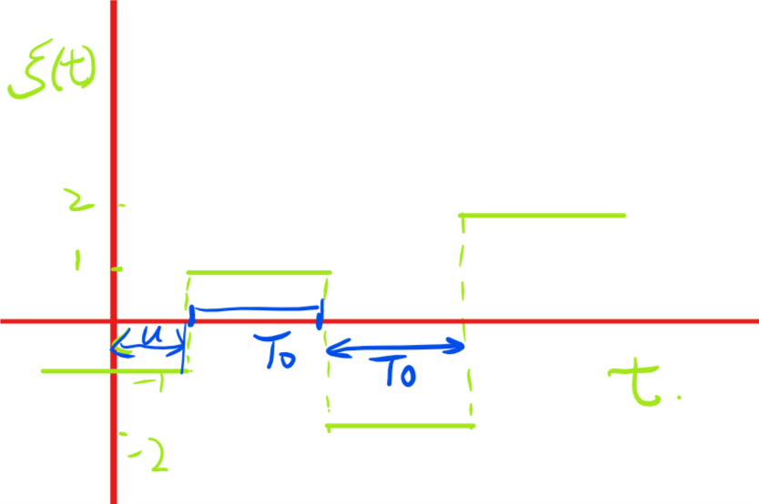

通信系统中的随机过程
在 一维随机游动 的例子中，我们讨论了参数离散取值离散的随机过程，今天，给出一个参数连续取值离散的随机过程。
设有一个脉冲数字通信系统，它传送的信号是脉冲宽度为\(T_{0}\)的脉冲信号，每隔\(T_{0}\)送出一个脉冲。脉冲幅度\(\xi(t)\)是一个随机变量，它可取四个值\(\{-2,-1,1,2\}\)，且取这四个值的概率是相同的，即：
\begin{eqnarray*} P(\xi(t) = 2)&=&P(\xi(t) = 1) \\ &=&P(\xi(t) = -1) \\ &=&P(\xi(t) = -2) \\ &=&1/4 \end{eqnarray*}不同周期内脉冲幅度是相互统计独立的，脉冲的起始时间相对于原点\(t=0\)的时间差\(u\)为均匀分布在\(0,T_{0}\)内的随机变量。试求在两个时刻\(t_{1},t_{2}\)该随机过程\(\xi(t)\)所取值\(\xi(t_{1}),\xi(t_{2})\)的二维联合概率密度。
首先，给出一个该脉冲数字通信数字信号的一个典型样本函数。如图1所示

图 1: 脉冲信号的典型样本函数
在时间轴上固定两个时刻\(t_{1},t_{2}\)。首先要研究的问题时\(t_{1},t_{2}\)是否处于一个脉冲内。设事件\(c\)表示\(t_{1},t_{2}\)处于不同的脉冲，它的逆事件\(c^{c}\)表示\(t_{1},t_{2}\)处于同一脉冲周期内。
当\(|t_{1} - t_{2}| > T_{0}\)时，事件\(c\)是必然事件，此时，\(P(c) = 1,P(c^{c}) = 0\),;
当\(|t_{1} - t_{2}| \leq T_{0}\)时，\(t_{1},t_{2}\)有可能在同一脉冲内，也有可能处于两个不同的脉冲内。设\(\theta\)为\(t_{1}\)所在的脉冲的起始时刻。由于脉冲的起始时间相对于原点\(t=0\)的时间差\(u\)均匀分布于\((0,T_{0})\)内，而且该信号为等脉宽的脉冲信号，脉宽均匀为\(T_{0}\)。则\(\theta\)也是均匀分布的随机变量，\(\theta\)可视为均匀分布于\([t_{1}-T_{0},t_{1}]\)内的随机变量。图2给出了\(\theta\)的概率密度和\(t_{1},t_{2},\theta\)的关系图。

图 2: \(t_{1},t_{2},\theta\)关系图
如果\(t_{1} < t_{2}\)，则：
\begin{eqnarray} \label{eq:1} P(c^{c})&=& P(t_{2} < \theta + T_{0}) = P( \theta > t_{2} - T_{0}) \\ &=& 1- P(\theta < t_{2} - T_{0}) \\ &=& 1- \frac{1}{T_{0}}\int_{t_{1} - T_{0}}^{t_{2} - T_{0}} d\theta \\ &=& 1- \frac{t_{2} - t_{1}}{T_{0}} \end{eqnarray}如果\(t_{2} < t_{1}\) ，则：
\begin{eqnarray} \label{eq:2} P(c^{c})&=& P(t_{2} > \theta) = \frac{1}{T_{0}} \int_{t_{1} - T_{0}}^{t_{2}}d\theta \\ &=& 1- \frac{t_{1}-t_{2}}{T_{0}} \end{eqnarray}因此：
\begin{eqnarray} \label{eq:3} P(c^{c})&=& 1- \frac{|t_{1}-t_{2}|}{T_{0}} \\ P(c) &=&\frac{|t_{1}-t_{2}|}{T_{0}} \end{eqnarray}根据全概率公式：
\begin{equation} \label{eq:4} f_{\xi_{t_{1}},\xi_{t_{2}}}(x_{1},x_{2}) = f_{\xi_{t_{1}},\xi_{t_{2}},c}(x_{1},x_{2}|c)P(c) + f_{\xi_{t_{1}},\xi_{t_{2}},c^{c}}(x_{1},x_{2}|c^{c})P(c^{c}) \end{equation}又因为不同周期内脉冲幅度是相互统计独立的随机变量，于是：
\begin{equation} \label{eq:5} f_{\xi_{t_{1}},\xi_{t_{2}},c}(x_{1},x_{2}|c) = \sum_{i=\{-2,-1,1,2\}}\frac{1}{4}\delta(x_{1} - i) \sum_{k=\{-2,-1,1,2\}}\frac{1}{4}\delta(x_{2} - k) \end{equation}如果\(t_{1},t_{2}\)处于同一周期，则\(\xi(t_{1} = \xi(t_{2}))\)，这时:
\begin{equation} \label{eq:6} f_{\xi_{t_{1}},\xi_{t_{2}} |c^{c}} = \sum_{i=\{-2,-1,1,2\}} \frac{1}{4}\delta(x_{1} - i)\delta(x_{2} - i) \end{equation}综上有：当\(|t_{1} - t_{2}| \leq T_{0}\)时：
\begin{eqnarray} \label{eq:9} f_{\xi_{t_{1}},\xi_{t_{2}}}(x_{1},x_{2}) &=& \sum_{i=\{-2,-1,1,2\}}\frac{1}{4}\delta(x_{1} - i) \sum_{k=\{-2,-1,1,2\}}\frac{1}{4}\delta(x_{2} - k) \frac{|t_{1} - t_{2}|}{T_{0}}\\ &+& \sum_{i=\{-2,-1,1,2\}} \frac{1}{4}\delta(x_{1} - i)\delta(x_{2} - i)(1- \frac{|t_{1} - t_{2}|}{T_{0}}) \end{eqnarray}当\(|t_{1} - t_{2}| \geq T_{0}\)时：
\begin{equation} \label{eq:8} f_{\xi_{t_{1}},\xi_{t_{2}}}(x_{1},x_{2}) = \sum_{i=\{-2,-1,1,2\}}\frac{1}{4}\delta(x_{1} - i) \sum_{k=\{-2,-1,1,2\}}\frac{1}{4}\delta(x_{2} - k) \end{equation}在这个题目中，全概率公式是主线，如何进行概率空间的划分是解决这个问题的关键。